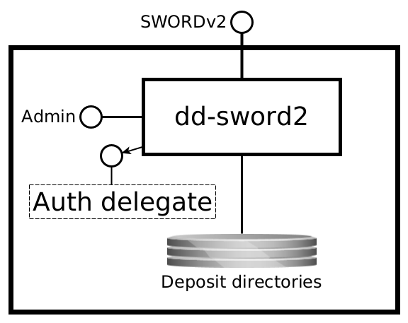

dd-sword2¶
DANS SWORD v2 based deposit service
SYNOPSIS¶
dd-sword2 { server | check }
DESCRIPTION¶
Overview¶
Context¶
The dd-sword2 service is the DANS implementation of the SWORDv2 protocol. It is a rewrite in Java of the Scala-based
project easy-sword2. Like its predecessor, it does not implement the full SWORDv2 specifications. Also, since the SWORDv2 specs leave
various important issues up to the implementer, the service adds some features.
The best starting point for learning about dd-sword2 is this document. Where appropriate, this document contains references to the
SWORDv2 specifications document. When reading the SWORDv2 docs, keep in mind that it is itself built on other specifications, and refers to
those often, especially:
Purpose of the service¶
At the highest level dd-sword2 is a service that accepts ZIP packages that comply with the BagIt packaging format and produces a
deposit directory for each.
Interfaces (provided)¶
The service has the following interfaces.

SWORDv2¶
- Protocol type: HTTP
- Internal or external: external
- Purpose: depositing packages, submitting them for archival processing and tracking progress
Deposit directories¶
- Protocol type: Shared filesystem
- Internal or external: internal
- Purpose: handing packages to the post-submission processing service and reporting back status changes written by that service to the
deposit.propertiesfiles of the deposit directories
Admin console¶
- Protocol type: HTTP
- Internal or external: internal
- Purpose: application monitoring and management
Interfaces (consumed)¶
The service consumes the following interfaces.
Auth delegate¶
- Protocol type: HTTP Basic Auth
- Internal or external: internal
- Purpose: delegate basic auth authentication of a client for SWORD2
Processing¶
The following sections describe the interaction of a client with the SWORDv2 interface. The examples are curl commands. The meaning of the shell variables is as follows:
| Variable | Meaning |
|---|---|
USER |
user name of sword client |
PASSWORD |
password of the sword client |
SWORD_BASE_URL |
the base URL of the SWORD service (the same URL is configured in config.yml as sword2.baseUrl) |
SWORD_COL_IRI |
the URL of the collection that the deposit is sent to |
SWORD_EDIT_IRI |
the URL to send subsequent parts to in a continued deposit |
Getting the service document¶
The service document is an XML document that lets the client discover the capabilities and the supported collections of the service. It can be retrieved with a simple GET request:
curl -X GET -u $USER:$PASSWORD $SWORD_BASE_URL/servicedocument
Pretty printing XML
Use xmllint to display XML output in a more readable format (the final dash is intentional!):
curl -X GET -u $USER:$PASSWORD $SWORD_BASE_URL/servicedocument | xmllint --format -
Creating and submitting a deposit¶
A deposit is created by binary file deposit. The other options that SWORDv2 specifies are currently not supported. Furthermore, the only
packaging that is supported is http://purl.org/net/sword/package/BagIt. This means that:
- the payload of the upload must be a ZIP file containing a bag;
- the
Packagingheader must be set tohttp://purl.org/net/sword/package/BagIt.
It is furthermore mandatory to send along the Content-MD5 header. (Note that SWORD2 requires the content of this header to be a hex encoded MD5
digest, rather than the base64 encoded MD5 digest specified in RFC1864 about Content-MD5.)
If bag.zip is such a ZIP file, then it can be uploaded as follows:
export BAG=bag.zip
curl -X POST \
-H 'Content-Type: application/zip' \
-H 'Content-Disposition: attachment; filename=bag.zip' \
-H "Content-MD5: $(md5 -q $BAG)" \
-H 'Packaging: http://purl.org/net/sword/package/BagIt' \
--data-binary @$BAG -u $USER:$PASSWORD $SWORD_COL_IRI
(The md5 command used above is the one from BSD and MacOS. You may have to get the correct output in a different way on other systems.
On Linux you can use $(md5sum $BAG | cut -d ' ' -f).)
If the upload is successful, the client will receive a deposit receipt. This is an Atom Entry document that contains, among other things, the statement URL (Stat-IRI), which is the URL the client can use to track post-submision processing.
Continued deposit¶
If the bag to be uploaded is larger than 1G it is recommended to use a continued deposit. The client must split the ZIP file into chunks and
send these in separate requests with the In-Progress header set to true for all chunks except the last. The names of the chunk files must be: the name of
the complete ZIP file, extended with .n, where n is the sequence number.
(1) The first chunk is sent to the collection URL (Col-IRI in SWORD terms), (2) the subsequent chunks are sent to the SWORD "edit" URL (SE-IRI), which can be found in the deposit receipt of the first upload.
The client indicates that it will be sending more chunks by including the header In-Progress: true. Since the content of each separate chunk is not a valid
ZIP file, the Content-Type must be set to application/octet-stream (which is a fancy way of saying the content consists of bytes).
If bag.zip.1, bag.zip.2 and bag.zip.3 are the chunks created by splitting bag.zip, they can be uploaded as follows:
Step (1)
export BAG=bag.zip
curl -X POST \
-H 'Content-Type: application/octet-stream' \
-H 'Content-Disposition: attachment; filename=bag.zip.1' \
-H 'In-Progress: true' \
-H "Content-MD5: $(md5 -q ${BAG}.1)" \
-H 'Packaging: http://purl.org/net/sword/package/BagIt' \
--data-binary @${BAG}.1 -u $USER:$PASSWORD $SWORD_COL_IRI
If the upload is successful the server will respond with a download receipt:
<entry xmlns="http://www.w3.org/2005/Atom">
<generator uri="http://www.swordapp.org/" version="2.0"/>
<id>https://swordserver.org/sword2/container/a5bb644a-78a3-47ae-907a-0bdf162a0cd4</id>
<link href="https://swordserver.org/sword2/container/a5bb644a-78a3-47ae-907a-0bdf162a0cd4" rel="edit"/>
<link href="https://swordserver.org/sword2/container/a5bb644a-78a3-47ae-907a-0bdf162a0cd4" rel="http://purl.org/net/sword/terms/add"/>
<link href="https://swordserver.org/sword2/media/a5bb644a-78a3-47ae-907a-0bdf162a0cd4" rel="edit-media"/>
<packaging xmlns="http://purl.org/net/sword/terms/">http://purl.org/net/sword/package/BagIt</packaging>
<link href="https://swordserver.org/sword2/statement/a5bb644a-78a3-47ae-907a-0bdf162a0cd4" rel="http://purl.org/net/sword/terms/statement"
type="application/atom+xml; type=feed"/>
<treatment xmlns="http://purl.org/net/sword/terms/">[1] unpacking [2] verifying integrity [3] storing persistently</treatment>
<verboseDescription xmlns="http://purl.org/net/sword/terms/">received successfully: bag.zip.1; MD5: 494dd614e36edf5c929403ed7625b157</verboseDescription>
</entry>
Step (2)
Parts 2 and 3 sent to the SWORD "edit" URL (SE-IRI). It can be retrieved from the deposit receipt by finding the link element
with rel="edit". In the example this is https://swordserver.org/sword2/container/a5bb644a-78a3-47ae-907a-0bdf162a0cd4.
curl -X POST \
-H 'Content-Type: application/octet-stream' \
-H 'Content-Disposition: attachment; filename=bag.zip.2' \
-H 'In-Progress: true' \
-H "Content-MD5: $(md5 -q ${BAG}.2)" \
-H 'Packaging: http://purl.org/net/sword/package/BagIt' \
--data-binary @${BAG}.2 -u $USER:$PASSWORD $SWORD_EDIT_IRI
For the last part the In-Progress header is set to false.
curl -X POST \
-H 'Content-Type: application/octet-stream' \
-H 'Content-Disposition: attachment; filename=bag.zip.3' \
-H 'In-Progress: false' \
-H "Content-MD5: $(md5 -q ${BAG}.3)" \
-H 'Packaging: http://purl.org/net/sword/package/BagIt' \
--data-binary @${BAG}.3 -u $USER:$PASSWORD $SWORD_EDIT_IRI
After this, the client will have to wait for the server to process the deposit. It should track the progress until the the server has confirmed that the deposit was fully processed.
Finalizing a deposit¶
When the client sends (the first part of) a bag, the server creates a draft deposit directory. As long as the client is uploading parts of the
deposit, the state of the deposit directory is DRAFT. When the last part has been received, the state becomes UPLOADED. An "uploaded" deposit is waiting for
finalization. When a finalization worker becomes available it will:
- change the state of the deposit to
FINALIZING; - concatenate the parts uploaded in a continued deposit into one file in the order indicated by the sequences numbers at the endings of the file names (in a simple deposit this is skipped, of course);
- unzip the file (if this fails, the deposit becomes
INVALID); - validate that resulting directory complies with the BagIt specs (if this fails, the deposit becomes
INVALID); - change the state to
SUBMITTED; - move the deposit to the directory configured for the collection in
sword2.collections.<collection>.deposits. (See config.yml.)
(Any error other than the upload not being a valid ZIP file or not being a valid bag, will cause the deposit to transition to a FAILED state. In other
words,INVALID indicates faulty input by the client, FAILED means that the server was misconfigured or was experiencing other problems.)
After this dd-sword2, will not write to the deposit in any way. In other words, by moving the deposit tot he deposits directory dd-sword2 hands over
further processing to a post-submission process. The only thing that dd-sword2 will continue to do is to serve the client the SWORD Statement whenever
requested. This ensures the client can keep track of the deposit even after dd-sword2 is finished with it.
Tracking post-submission processing¶
As soon as the deposit exists, the client can track its state by downloading the SWORD statement from the Statement URL
(Stat-IRI). This URL can be found in the deposit receipt in the link with the attribute rel="http://purl.org/net/sword/terms/statement".
A SWORD Statement is an Atom Feed document (the RDF/XML serialization is currently not supported by dd-sword2), for example:
<feed xmlns="http://www.w3.org/2005/Atom">
<id>$SWORD_STAT_IRI</id>
<link href="$SWORD_STAT_IRI" rel="self"/>
<title type="text">Deposit a5bb644a-78a3-47ae-907a-0bdf162a0cd4</title>
<author>
<name>user</name>
</author>
<updated>2019-05-23T14:51:15.356Z</updated>
<category term="ARCHIVED" scheme="http://purl.org/net/sword/terms/state" label="State"/>
<entry>
<content type="multipart/related" src="urn:uuid:a5bb644a-78a3-47ae-907a-0bdf162a0cd4"/>
<id>urn:uuid:a5bb644a-78a3-47ae-907a-0bdf162a0cd4</id>
<title type="text">Resource urn:uuid:a5bb644a-78a3-47ae-907a-0bdf162a0cd4</title>
<summary type="text">Resource Part</summary>
<updated>2019-05-23T14:51:22.342Z</updated>
<link href="https://doi.org/10.5072/dans-Lwgy-zrn-jfyy" rel="self"/>
</entry>
</feed>
The statement provides information about the deposit as it is processed by the server (dd-sword2 and any post-submission process), most
importantly the current state of the deposit. This can be found in the <category> element with the scheme attribute set
to http://purl.org/net/sword/terms/state. The term attribute of this element contains the current state. The table below lists the states implemented
by dd-sword2 and their meaning. The post-submission process can set the state by updating the state.label and state.description properties in
the deposit.properties file. The state labels it uses are transparent to dd-sword2. It may for example use ARCHIVED to indicate that
post-submission processing has finished with successfully archiving the deposit.
| State | Description |
|---|---|
DRAFT |
The deposit is being prepared by the depositor. It is not submitted to the archive yet and still open for additional data. |
UPLOADED |
The deposit is in the process of being submitted. It is waiting to be finalized. The data is completely uploaded. It will automatically move to the next stage and the status will be updated accordingly. |
FINALIZING |
The deposit is in the process of being submitted. It is being checked for validity. It will automatically move to the next stage and the status will be updated accordingly. |
INVALID |
The deposit is not accepted by the archive as the submitted bag is not valid. The description will detail what part of the bag is not according to specifications. The depositor is asked to fix the bag and resubmit the deposit. |
SUBMITTED |
The deposit is submitted for processing. dd-sword2 will not update it anymore and limit itself to providing a Statement document on request. |
FAILED |
An error occurred while processing the deposit |
ARGUMENTS¶
positional arguments:
{server,check} available commands
named arguments:
-h, --help show this help message and exit
-v, --version show the application version and exit
EXAMPLES¶
Java client code examples are available in dd-dans-sword2-examples.
INSTALLATION¶
Currently this project is built as an RPM package for RHEL7/CentOS7 and later. The RPM will install the binaries to
/opt/dans.knaw.nl/dd-sword2 and the configuration files to /etc/opt/dans.knaw.nl/dd-sword2.
For installation on systems that do no support RPM and/or systemd:
- Build the tarball (see next section).
- Extract it to some location on your system, for example
/opt/dans.knaw.nl/dd-sword2. - Start the service with the following command
bash /opt/dans.knaw.nl/dd-sword2/bin/dd-sword2 server /opt/dans.knaw.nl/dd-sword2/cfg/config.yml
CONFIGURATION¶
This service can be configured by changing the settings in config.yml. See the comments in that file for more information.
BUILDING FROM SOURCE¶
Prerequisites:
- Java 11 or higher
- Maven 3.3.3 or higher
- RPM
Steps:
git clone https://github.com/DANS-KNAW/dd-sword2.git
cd dd-sword2
mvn clean install
If the rpm executable is found at /usr/local/bin/rpm, the build profile that includes the RPM packaging will be activated. If rpm is available, but at a
different path, then activate it by using Maven's -P switch: mvn -Prpm install.
Alternatively, to build the tarball execute:
mvn clean install assembly:single